PDF在线精确压缩
 选择需要压缩的文件:{{file.name}}
选择需要压缩的文件:{{file.name}}
{{statext}}
{{file.name}}
{{(file.size/1024).toFixed(3)}}KB
文件可压缩范围:最大{{fileMaxSize.toFixed(3)}}KB--最小{{fileMinSize.toFixed(3)}}KB
预计图片压缩率:{{compressrate.toFixed(3)}}%
预计压缩后大小:{{compressedSize.toFixed(3)}}KB
预计PSNR:{{psnr.toFixed(3)}}
预计SSIM:{{ssim.toFixed(3)}}
可压缩最小体积
极致压缩
推荐最低压缩体积
推荐标准压缩体积
无损处理体积
PSNR高于40dB说明图像质量极好,即非常接近原始图像
在30—40dB通常表示图像质量是好的即失真可以察觉但可以接受
在20—30dB说明图像质量差
最后PSNR低于20dB图像一般不可接受
SSIM > 0.9:图像质量非常好，失真几乎不可察觉。
0.7 < SSIM < 0.9:图像质量较好，存在轻微失真，但通常可以接受。 SSIM < 0.7:图像质量较差，失真明显。 SSIM < 0.5:图像质量非常差，失真严重。
限制目标文件最大大小(KB):
test-zip.pdf
4.0MB